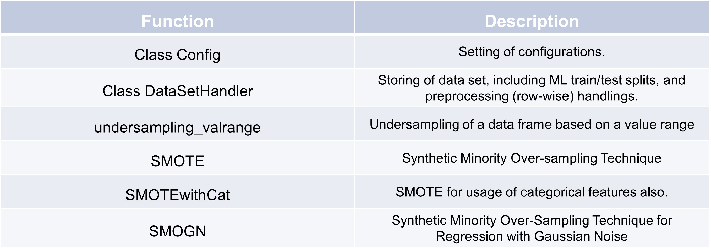

Configurations and data set handling#
Configurations#
Configurations of data quality enhancement procedures are defined in the Config class. The Config class is initialized with several parameters, such as the column names for detection targets, ground truth values, and raw data, alongside other configurations like sensor type and event classification. These settings are used for model development and assessment in a data processing pipeline focused on extreme events like precipitation.
import TSCC
# instance of the class
config = TSCC.assessment.Config(
colname_target_det="isCorrect_gt",
colname_target_corr="ground_truth",
colname_raw="raw",
df_id_column=None,
exclude_cols=[],
colname_isEvent="isHeavyRain",
sensortype='precipitation',
cross_validation = False)
Data set handling#
The data frame to be qualified is df. config is an Instance of TSCC.assessment.Config.
This section explains how to handle a dataset within the TSCC framework. The example df DataFrame contains
columns like “ground_truth” and “raw” sensor values of synthetic data. The DataSetHandler class is then
initialized with this DataFrame and a config (an instance of Config), holding configurations for the
processing pipeline including the data set handling. The DataSetHandler divides the data set into training and
test. If the config parameter cross_validation is False, a single train-test split is used.
Otherwise, 5 training and test sets are extracted per default. dataSetHandler.list_len shows that the handler
contains one train-test split in this example.
import pandas as pd
import numpy as np
n = 10
# Set random seed for reproducibility
np.random.seed(0)
# Generate random data
data = np.random.randn(n, 4)
date_range = pd.date_range(start='2024-08-01', periods=n, freq='5min', name = "timestamp")
# Create DataFrame with specified column names
df = pd.DataFrame(data, columns=["ground_truth", "raw", 'fea_1', 'fea_2'], index = date_range)
df["raw"] = df["ground_truth"] + np.random.normal(0, 5, n)*np.random.randint(0, 2, n)
df["isCorrect_gt"] = df["ground_truth"] == df["raw"]
df["isHeavyRain"] = 1
dataSetHandler = TSCC.preprocessing.DataSetHandler(df, config)
>>>dataSetHandler.list_len
1
>>>print(dataSetHandler.get_train_features()[0])
raw fea_1 fea_2 isHeavyRain
timestamp
2024-08-01 00:00:00 -3.478712 0.978738 2.240893 1
2024-08-01 00:05:00 -5.232532 0.950088 -0.151357 1
2024-08-01 00:10:00 -8.634570 0.144044 1.454274 1
2024-08-01 00:15:00 10.514915 0.443863 0.333674 1
2024-08-01 00:20:00 -1.054182 0.313068 -0.854096 1
2024-08-01 00:25:00 -2.552990 0.864436 -0.742165 1
2024-08-01 00:30:00 -3.994222 0.045759 -0.187184 1
2024-08-01 00:35:00 5.420231 0.154947 0.378163 1
>>>print(dataSetHandler.get_test_features()[0])
raw fea_1 fea_2 isHeavyRain
timestamp
2024-08-01 00:40:00 -8.957275 -0.347912 0.156349 1
2024-08-01 00:45:00 0.166589 -0.387327 -0.302303 1
>>>print(dataSetHandler.get_train_targets()[0])
isCorrect_gt ground_truth
timestamp
2024-08-01 00:00:00 False 1.764052
2024-08-01 00:05:00 False 1.867558
2024-08-01 00:10:00 False -0.103219
2024-08-01 00:15:00 False 0.761038
2024-08-01 00:20:00 False 1.494079
2024-08-01 00:25:00 True -2.552990
2024-08-01 00:30:00 False 2.269755
2024-08-01 00:35:00 False 1.532779
>>>print(dataSetHandler.get_test_targets()[0])
isCorrect_gt ground_truth
timestamp
2024-08-01 00:40:00 False -0.887786
2024-08-01 00:45:00 False 1.230291
Preprocessing for skewed distributions#
This section provides an example of preprocessing for skewed distributions using various techniques available in the
TSCC framework. Functions like undersampling_valrange, SMOTEwithCat, and SMOGN are
introduced to manipulate the distribution of observations in the dataset, addressing class imbalances.
In the given code, synthetic data is generated, and the SMOTE function is applied to create more balanced
training features and targets. This process enhances the dataset by oversampling minority classes, particularly for
extreme events like precipitation.
import pandas as pd
import numpy as np
import TSCC
# instance of the class
config = TSCC.assessment.Config(
colname_target_det="isCorrect_gt",
colname_target_corr="ground_truth",
colname_raw="raw",
colname_id="timestamp",
exclude_cols=[],
colname_isEvent="isHeavyRain",
sensortype='precipitation')
# Set random seed for reproducibility
np.random.seed(0)
# Generate random data
data = np.random.randn(100, 4)
date_range = pd.date_range(start='2024-08-01', periods=100, freq='5min', name = "timestamp")
# Create DataFrame with specified column names
df = pd.DataFrame(data, columns=["ground_truth", "raw", 'fea_1', 'fea_2'], index = date_range)
df["raw"] = df["ground_truth"] + np.random.normal(0, 5, 100)*np.random.randint(0, 2, 100)
df["isCorrect_gt"] = df["ground_truth"] == df["raw"]
df["isHeavyRain"] = 1
dataSetHandler = TSCC.preprocessing.DataSetHandler(df, config)
fea_smote, tar_smote = TSCC.preprocessing.\
SMOTE(dataSetHandler.get_train_features(exclude_columns=config.exclude_cols)[0],
dataSetHandler.get_train_targets()[0],
config.colname_target_det,
config.df_id_column,
["isHeavyRain"])